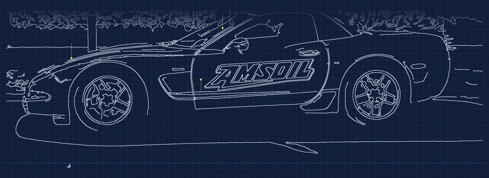

Somos ingenieros técnicos y peritos con experiencia real como mecánicos. Analizamos tu caso hasta el detalle técnico y lo convertimos en un informe claro, capaz de sostener tu reclamación frente a la aseguradora, el vendedor o el taller.

No nos limitamos a valorar un daño sobre el papel. Sabemos identificarlo, desmontarlo y entender su origen mecánico real, porque antes de dedicarnos a la valoración pericial hemos trabajado con nuestras propias manos en el taller.
Esa doble mirada —la de ingenieros y la de mecánicos— es la que sostiene el nivel de detalle de cada informe: no se queda en la superficie de la chapa, entra en la causa técnica del problema.
Y sobre todo, sabemos traducir esa complejidad técnica a un lenguaje claro y bien estructurado, de forma que cualquiera sin formación mecánica —un juez, un abogado, un asegurador— pueda entender exactamente qué ha ocurrido en cada caso.
Cada reclamación se estudia de forma independiente, con el mismo rigor técnico en todos los casos.
Reclamaciones por vicios ocultos al comprar un vehículo a un particular, analizando los derechos de comprador y vendedor.
Consultar caso →Averías no atendidas en garantía al comprar un vehículo nuevo o de segunda mano.
Consultar caso →Si eres el perjudicado, analizamos si la oferta recibida por los daños se ajusta a lo que realmente corresponde.
Consultar caso →Ante una oferta por garantía de todo riesgo, tienes derecho al nombramiento de tu propio perito (Art. 38 LCS).
Consultar caso →Asesoramiento independiente si estás negociando con tu compañía la indemnización por pérdida total.
Consultar caso →Si no llegas a un acuerdo sobre cómo debe repararse tu vehículo, te indico tus derechos y opciones.
Consultar caso →Si tu vehículo salió con un defecto de fábrica, puedes reclamar la reparación aunque haya finalizado la garantía.
Consultar caso →El taller responde no solo de las reparaciones que hace, sino también de las que debería haber previsto.
Consultar caso →Sin intermediarios ni procesos innecesarios. Directamente con nosotros, de principio a fin.
Sesión de hasta 45 minutos por 65 € (IVA incl.) para analizar tu caso. Si finalmente encargas el informe pericial, este importe se descuenta del precio final.
Revisamos el vehículo o la documentación con el mismo rigor que aplicaríamos como mecánicos, y te explicamos qué opciones tienes.
Recibes un informe pericial claro, listo para la negociación extrajudicial o para presentarse ante el juzgado. Si el procedimiento llega a fase judicial, también podemos ratificar el informe ante el juzgado como servicio adicional.
Ejemplos reales, anonimizados, disponibles bajo petición.
Comparativa técnica entre la tasación de la aseguradora y el valor de mercado real, con desglose de partidas.
Inspección mecánica completa que revela un fallo estructural no declarado en el momento de la venta.
Determinación técnica de si el taller debería haber previsto la avería posterior a su intervención.
Desplazamiento y visitas a domicilio en las siguientes zonas. Consulta disponibilidad para otras provincias.
Cuantos más detalles nos des, antes podemos decirte si podemos ayudarte y qué te va a costar.